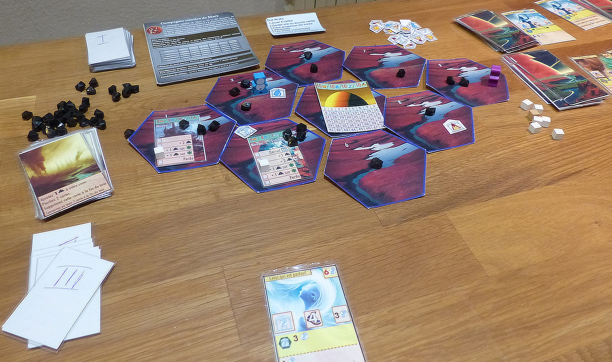
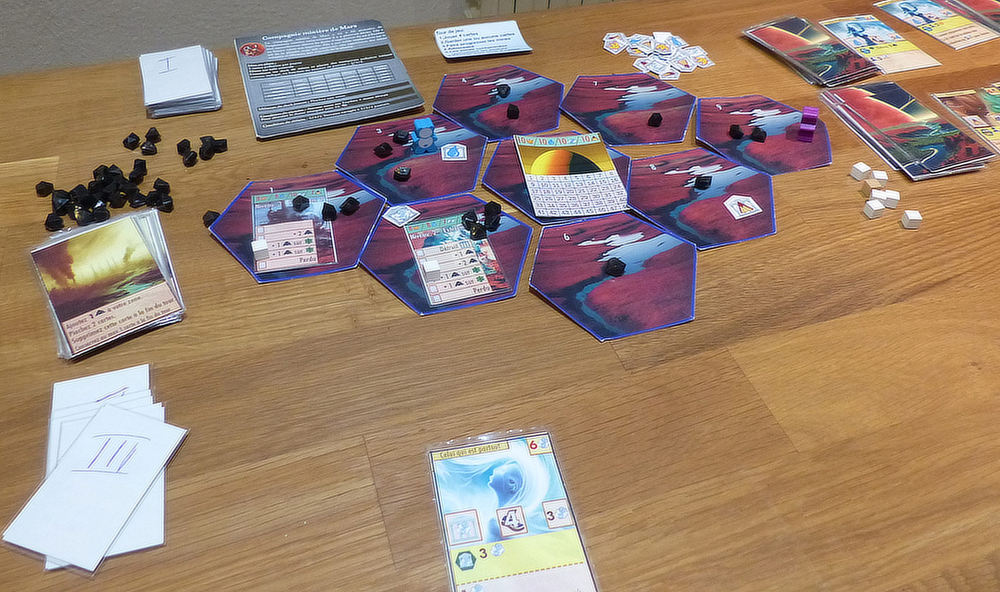

Game charact3eristics
- 2 to 4 players
- 60-80 min approx.
- exper players (BGG complexity ~2.9)
- Mwechanisms: cooperative, asymetric game, deckbuilding, multi-use cards, resources.
- Rules:
Cooperate to defend the planet.
In Erythro, you help a planet defend itself against a mining operator who is polluting its soil.
Cooperate to destroy the mines of the operator and clean up the soil before it becomes contaminated.
Players embody ambassadors of the planet who try to save it.
Each ambassador masters 2 elements among water, fire, earth, and air.
He can only collect influence for these two elements.
The ambassadors are in perpetual communion with the planet, which allows them to trigger terrible natural disasters allowing them to destroy mines and repel the invader.
Players build sanctuaries dedicated to one of the 4 elements, collect elementary influence, and depollute the surface of the planet.
They also use their influence to learn new skills.
|
|


 
